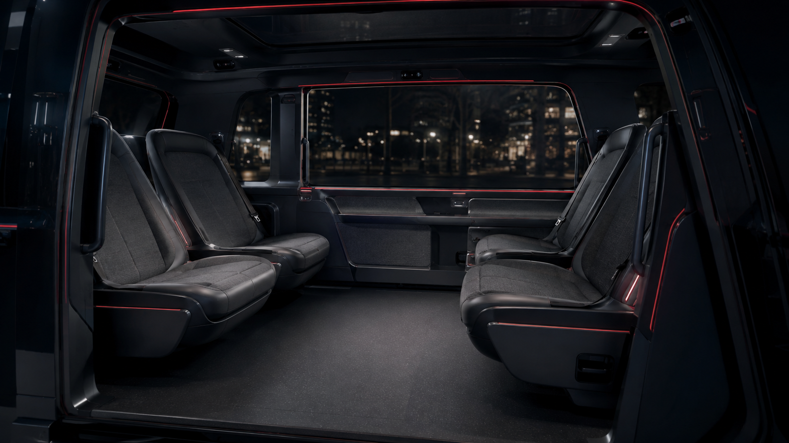
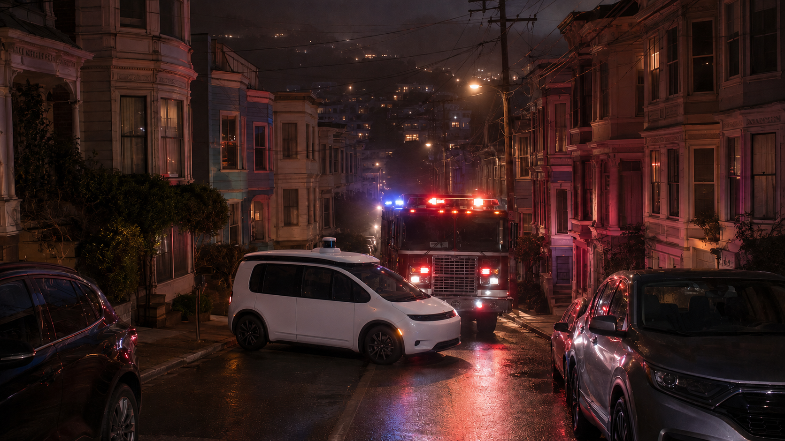

On-site assistance
A trained operator is dispatched to the scene.
[ 01 / Overview ]
HALOGRIP is a compact, low-speed fallback interface that lets authorized first responders reposition a stalled robotaxi on site.
[ 02 / The shift ]
Purpose-built robotaxis are beginning to move beyond the conventional driver's cockpit. Deployment, however, remains in transition as regulations and emergency systems adapt.

More flexible passenger space
Traditional controls removed
The driver may disappear. The need to intervene does not.

[ 03 / Real-world consequence ]
74
AV-related disruptions to emergency response in San Francisco, Nov 2022–Aug 2023.01
These incidents reveal the need for rapid human intervention when an automated vehicle cannot resolve the situation itself.
01 — Replace with the verified source from the project research.
[ 04 / Current response ]
A trained operator is dispatched to the scene.
Responders contact the company and verify access.
Procedures vary across models and operators.
These safeguards are valuable—but intervention still depends on external personnel, connectivity, training and vehicle-specific procedures.
[ 05 / The design gap ]
Not full manual driving. Not a conventional driver's cockpit. A compact, authorized interface for low-speed repositioning.
Available at the vehicle
Restricted to ≤15 km/h
Usable under pressure
Insert HALOGRIP 3D model
Scroll-driven reveal areaControlled, low-speed maneuverability inside the robotaxi—without bringing back the conventional driver's seat.